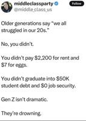

An anonymous reader quotes a report from Ars Technica: Google's Gemini AI models have improved by leaps and bounds over the past year, but you can only use Gemini on Google's terms. The company's Gemma open-weight models have provided more freedom, but Gemma 3, which launched over a year ago, is getting a bit long in the tooth. Starting today, developers can start working with Gemma 4, which comes in four sizes optimized for local usage. Google has also acknowledged developer frustrations with AI licensing, so it's dumping the custom Gemma license.
Like past versions of its open-weight models, Google has designed Gemma 4 to be usable on local machines. That can mean plenty of things, of course. The two large Gemma variants, 26B Mixture of Experts and 31B Dense, are designed to run unquantized in bfloat16 format on a single 80GB Nvidia H100 GPU. Granted, that's a $20,000 AI accelerator, but it's still local hardware. If quantized to run at lower precision, these big models will fit on consumer GPUs. Google also claims it has focused on reducing latency to really take advantage of Gemma's local processing. The 26B Mixture of Experts model activates only 3.8 billion of its 26 billion parameters in inference mode, giving it much higher tokens-per-second than similarly sized models. Meanwhile, 31B Dense is more about quality than speed, but Google expects developers to fine-tune it for specific uses.
The other two Gemma 4 models, Effective 2B (E2B) and Effective 4B (E4B), are aimed at mobile devices. These options were designed to maintain low memory usage during inference, running at an effective 2 billion or 4 billion parameters. Google says the Pixel team worked closely with Qualcomm and MediaTek to optimize these models for devices like smartphones, Raspberry Pi, and Jetson Nano. Not only do they use less memory and battery than Gemma 3, but Google also touts "near-zero latency" this time around.
The Apache 2.0 license is much more flexible with its terms of use for commercial restrictions, "granting you complete control over your data, infrastructure, and models," says Google.
Clement Delangue, co-founder and CEO of Hugging Face, called it "a huge milestone" that will help developers use Gemma for more projects and expand what Google calls the "Gemmaverse."
Read more of this story at Slashdot.
Nvidia has begun rolling out a beta feature that automatically compiles game shaders while a PC is idle. It won't eliminate shader compilation the first time a game runs, but Ars Technica reports it could help reduce those repeated wait times. From the report: Nvidia's new Auto Shader Compilation system promises to "reduc[e] the frequency of game runtime compilation after driver updates" for users running Nvidia's GeForce Game Ready Driver 595.97 WHQL or later. When the feature is active and your machine is idle, the app will automatically start rebuilding DirectX drivers for your games so they're all set to roll the next time they launch.
While the feature defaults to being turned off when the Nvidia App is first downloaded, users can activate it by going to the Graphics Tab > Global Settings > Shader Cache. There, they can set aside disk space for precompiled shaders and decide how many system resources the compilation process should use. App users can also manually force shader recompilation through the app rather than waiting for the machine to go idle.
Unfortunately, Nvidia warns that users will still have to generate shaders in-game after downloading a title for the first time. The Auto Shader Compiler system only generates the new shaders needed after subsequent driver updates following that first run of a new title.
Read more of this story at Slashdot.
Valve's March 2026 Steam Survey shows Linux gaming usage jumping to a record 5.33% share -- more than double macOS's 2.35%. Phoronix reports: Steam on Linux was never above 5% and easily an all-time high for the Linux gaming marketshare, especially in absolute numbers. It was a massive 3.1% spike in March while macOS also jumped surprisingly by 1.19% to 2.35%. The Steam Survey numbers show Windows losing 4.28%, down to 92.33%.
Part of the jump at least appears to be explained by Valve correcting again the Steam China numbers. Month over month they report a 31.85% drop to the Simplified Chinese language use and English use increasing by 16.82% to 39.09%. Other languages also showed gains amid the massive decline in Simplified Chinese use.
The latest numbers for March show around a quarter of the Linux gamers are running Steam OS. Due in part to the Steam Deck APU being a custom AMD product and the popularity of AMD hardware on Linux for its open-source nature, AMD CPU use by Steam on Linux gamers remains just under 70%.
Read more of this story at Slashdot.
Scientists say extreme March heat caused an unusually rapid collapse of snowpack across the American West that's leaving major basins at record or near-record lows. "This year is on a whole other level," said Dr Russ Schumacher, a Colorado State University climatologist. "Seeing this year so far below any of the other years we have data for is very concerning." The Guardian reports: [...] The issue is extremely widespread. Data from a branch of the US Department of Agriculture (USDA), which logs averages based on levels between 1991 and 2020, shows states across the south-west and intermountain west with eye-popping lows. The Great Basin had only 16% of average on Monday and the lower Colorado region, which includes most of Arizona and parts of Nevada, was at 10%. The Rio Grande, which covers parts of New Mexico, Texas and Colorado, was at 8%. "This year has the potential of being way worse than any of the years we have analogues for in the past," Schumacher said.
Even with near-normal precipitation across most of the west, every major river basin across the region was grappling with snow drought when March began, according to federal analysts. Roughly 91% of stations reported below-median snow water equivalent, according to the last federal snow drought update compiled on March 8. Water managers and climate experts had been hopeful for a March miracle -- a strong cold storm that could set the region on the right track. Instead, a blistering heatwave unlike any recorded for this time of year baked the region and spurred a rapid melt-off. "March is often a big month for snowstorms," Schumacher said. "Instead of getting snow we would normally expect we got this unprecedented, way-off-the-scale warmth."
More than 1,500 monthly high temperature records were broken in March and hundreds more tied. The event was "likely among the most statistically anomalous extreme heat events ever observed in the American south-west," climate scientist Daniel Swain said in an analysis posted this week. "Beyond the conspicuous 'weirdness' of it all," Swain added, "the most consequential impact of our record-shattering March heat will likely be the decimation of the water year 2025-26 snowpack across nearly all of the American west." Calling the toll left by the heat "nothing short of shocking," Swain noted that California was tied for its worst mountain snowpack value on record. While the highest elevations are still coated in white, "lower slopes are now completely bare nearly statewide."
Read more of this story at Slashdot.
NASA's Artemis II mission has launched four astronauts around the moon and back, marking humanity's first crewed lunar voyage in 53 years and the first test flight of NASA's Orion capsule and Space Launch System (SLS) with people on board. Five minutes into the flight, Commander Reid Wiseman saw the team's target: "We have a beautiful moonrise, we're headed right at it," he said from the capsule. The Associated Press reports: Artemis II set sail from the same Florida launch site that sent Apollo's explorers to the moon so long ago. The handful still alive cheered this next generation's grand adventure as the Space Launch System rocket thundered into the early evening sky, a nearly full moon beckoning some 248,000 miles (400,000 kilometers) away.
Artemis II commander Reid Wiseman led the charge into space with "Let's go to the moon!" accompanied by pilot Victor Glover, Christina Koch and Canada's Jeremy Hansen. It was the most diverse lunar crew ever with the first woman, person of color and non-U.S. citizen riding in NASA's new Orion capsule.
Carrying three Americans and one Canadian, the 32-story rocket rose from NASA's Kennedy Space Center where tens of thousands gathered to witness the dawn of this new era. Crowds also jammed the surrounding roads and beaches, reminiscent of the Apollo moonshots in the 1960s and '70s. It is NASA's biggest step yet toward establishing a permanent lunar presence. Visit NASA's Artemis II Launch Day blog for the latest updates.
Developing...
Read more of this story at Slashdot.
Longtime Slashdot reader Elektroschock writes: When Ubisoft pulled the plug on The Crew's servers without warning, players were left with a worthless game they'd already paid for. Now, consumer watchdog UFC-Que Choisir is fighting back, demanding gamers' right to play regardless of publisher whims. Supported by the "Stop Killing Games" movement, this landmark case challenges unfair terms before the Creteil Judicial Court (Val-de-Marne near Paris), and aims to protect players from disappearing games. The lawsuit that UFC-Que Choisir filed against Ubisoft on Tuesday alleges that the video game publisher "misled consumers about the permanence of their purchase and imposed abusive contractual clauses stripping players of ownership rights," reports Reuters.
Read more of this story at Slashdot.
In classic Cloudflare fashion, the CDN provider used April Fool's Day to unveil an actual, "not a joke" product. Today, the company announced EmDash -- an open-source "spiritual successor" to WordPress that aims to solve plugin security. Phoronix reports: With the help of AI coding agents, Cloudflare engineers have been rebuilding the WordPress open-source project "from the ground up." EmDash is written entirely in TypeScript and is a server-less design. Making plug-ins more secure than the WordPress architecture, EmDash plug-ins are sandboxed and run in their own isolate. EmDash builds upon the Astro web framework. EmDash doesn't rely on any WordPress code but is designed to be compatible with WordPress functionality. EmDash is open-source now under the MIT license. The EmDash code is available on GitHub.
Read more of this story at Slashdot.
darwinmac writes: OnlyOffice has suspended its partnership with Nextcloud after the latter forked its editors into a new project called Euro-Office, according to a report from Neowin. The move comes just days after Nextcloud and partners like IONOS announced the fork as part of a broader push for European digital sovereignty. In a statement, the company accused the project of violating its licensing terms and international intellectual property law, claiming that Euro-Office uses its technology without proper compliance. OnlyOffice also pointed to missing attribution requirements and branding obligations tied to its AGPL-based licensing model.
As a result, its 8-year-old partnership, which allowed Nextcloud users to edit and collaborate on office documents right inside their own instance, has been suspended. OnlyOffice also accused Nextcloud of not behaving in a manner expected of a partner, alleging attempts to poach its employees and influence customers against the company. Nextcloud said it forked the OnlyOffice repository instead of collaborating with the company because the project is notoriously difficult to contribute to. It also pointed out that OnlyOffice is a Russian company with Russian employees who leave code comments in Russian. In addition to that, some users may feel uncomfortable using software that could be linked to the Russian government.
Read more of this story at Slashdot.
Even on NASA's Artemis II mission around the moon, astronauts apparently still have to deal with broken Microsoft Outlook. One of the crew members, Reid Wiseman, jokingly reported that he had "two Microsoft Outlooks" and neither worked. 404 Media reports: On April 1, four astronauts from the U.S. and Canada embarked on a 10-day flight to loop around the moon. Spotted by VGBees podcast host Niki Grayson on the NASA livestream of live views from the , around 2 a.m. ET, mission control acknowledges an issue with a process control system and offers to remote in -- yes, like how your office IT guy would pause his CoD campaign to log into Okta for you because you used the wrong password too many times.
One of the astronauts, Reid Wiseman, says that's chill, but while they're in there: "I also see that I have two Microsoft Outlooks, and neither one of those are working." Astronauts are trained for decades in some of the most physically and mentally grueling environments of any career. They're some of the smartest people on the planet, and they have to be, before we strap them to 3.2 million pounds of jet fuel and make them do complex experiments and high-stakes decisions for days on end. And yet, once they get up there, fucking Outlook is borked.
Read more of this story at Slashdot.
Reuters reports that SpaceX has confidentially filed for a U.S. IPO, reportedly targeting a valuation above $1.75 trillion. Reuters reports: SpaceX puts more rockets in space than any other company and promises a chance to invest in humanity's return to the moon and attempt to colonize Mars. The company aspires to put artificial intelligence data centers in space, while running a lucrative satellite communications system that opens up much of the earth to the internet and is increasingly used in war. [...]
A public listing at a potential valuation of more than $1.75 trillion comes after SpaceX merged with Musk's artificial intelligence startup xAI in a deal that valued the rocket company at $1 trillion and the developer of the Grok chatbot at $250 billion. SpaceX is hosting an analyst day on April 21, encouraging research analysts to attend in person, [...]. The company is also offering analysts an optional visit to xAI's "Macrohard" data center site in Memphis, Tennessee, on April 23, and plans to hold a virtual session on May 4 to discuss financial models with banks' research analysts, the source said.
Read more of this story at Slashdot.
ZipNada writes: Two software researchers recently demonstrated how modern AI tools can reproduce entire open-source projects, creating proprietary versions that appear both functional and legally distinct. The partly-satirical demonstration shows how quickly artificial intelligence can blur long-standing boundaries between coding innovation, copyright law, and the open-source principles that underpin much of the modern internet.
In their presentation, Dylan Ayrey, founder of Truffle Security, and Mike Nolan, a software architect with the UN Development Program, introduced a tool they call malus.sh. For a small fee, the service can "recreate any open-source project," generating what its website describes as "legally distinct code with corporate-friendly licensing. No attribution. No copyleft. No problems." It's a test case in how intellectual property law -- still rooted in 19th-century precedent -- collides with 21st-century automation. Since the US Supreme Court's Baker v. Selden ruling, copyright has been understood to guard expression, not ideas.
That boundary gave rise to clean-room design, a method by which engineers reverse-engineer systems without accessing the original source code. Phoenix Technologies famously used the technique to build its version of the PC BIOS during the 1980s. Ayrey and Nolan's experiment shows how AI can perform a clean-room process in minutes rather than months. But faster doesn't necessarily mean fair. Traditional clean-room efforts required human teams to document and replicate functionality -- a process that demanded both legal oversight and significant labor. By contrast, an AI-mediated "clean room" can be invoked through a few prompts, raising questions about whether such replication still counts as fair use or independent creation.
Read more of this story at Slashdot.
An anonymous reader quotes a report from Ars Technica: In 2023, the Swedish government announced that the country's schools would be going back to basics, emphasizing skills such as reading and writing, particularly in early grades. After mostly being sidelined, physical books are now being reintroduced into classrooms, and students are learning to write the old-fashioned way: by hand, with a pencil or pen, on sheets of paper. The Swedish government also plans to make schools cellphone-free throughout the country.
Educational authorities have been investing heavily. Last year alone, the education ministry allocated $83 million to purchase textbooks and teachers' guides. In a country with about 11 million people, the aim is for every student to have a physical textbook for each subject. The government also put $54 million towards the purchase of fiction and non-fiction books for students.
These moves represent a dramatic pivot from previous decades, during which Sweden -- and many other nations -- moved away from physical books in favor of tablets and digital resources in an effort to prepare students for life in an online world. Perhaps unsurprisingly, the Nordic country's efforts have sparked a debate on the role of digital technology in education, one that extends well beyond the country's borders. US parents in districts that have adopted digital technology to a great extent may be wondering if educators will reverse course, too. As for why Sweden is pivoting away from digital devices, researcher Linda Falth said the move was driven by several factors, including concerns over whether the digitization of classrooms had been evidence-based. "There was also a broader cultural reassessment," Falth said. "Sweden had positioned itself as a frontrunner in digital education, but over time concerns emerged about screen time, distraction, reduced deep reading, and the erosion of foundational skills such as sustained attention and handwriting."
Falth noted that proponents of reform believe that "basic skills -- especially reading, writing, and numeracy -- must be firmly established first, and that physical textbooks are often better suited for that purpose."
Further reading: Digital Platforms Correlate With Cognitive Decline in Young Users
Read more of this story at Slashdot.
Anthropic is using copyright takedown notices to try to contain an accidental leak of the underlying instructions for its Claude Code AI agent. According to the Wall Street Journal, "Anthropic representatives had used a copyright takedown request to force the removal of more than 8,000 copies and adaptations of the raw Claude Code instructions ... that developers had shared on programming platform GitHub." From the report: Programmers combing through the source code so far have marveled on social media at some of Anthropic's tricks for getting its Claude AI models to operate as Claude Code. One feature asks the models to go back periodically through tasks and consolidate their memories -- a process it calls dreaming. Another appears to instruct Claude Code in some cases to go "undercover" and not reveal that it is an AI when publishing code to platforms like GitHub. Others found tags in the code that appeared pointed at future product releases. The code even included a Tamagotchi-style pet called "Buddy" that users could interact with.
After Anthropic requested that GitHub remove copies of its proprietary code, another programmer used other AI tools to rewrite the Claude Code functionality in other programming languages. Writing on GitHub, the programmer said the effort was aimed at keeping the information available without risking a takedown. That new version has itself become popular on the programming platform.
Read more of this story at Slashdot.
AmiMoJo shares a report from Phoronix: Raspberry Pi prices are going up yet again due to the continued memory squeeze on the industry. To help offset the memory prices for some use-cases, Raspberry Pi also announced the introduction of the Raspberry Pi 4 3GB model at $83 to help fill the void between the 2GB and 4GB options.
The 3GB Raspberry Pi 4 was announced at $83.75 USD for those not needing quite 4GB of RAM and looking to save some memory given the ongoing price increases. The Raspberry Pi 4 and Raspberry Pi 5 4GB models are seeing new $25 price increases, the 8GB models seeing $50 price increases, and the 16GB Raspberry Pi 5 is going up by $100. The Raspberry Pi 500+ is seeing a $150 price increase. The Raspberry Pi Compute Modules are also seeing increases from $11.25 to $100 USD.
Read more of this story at Slashdot.
An anonymous reader quotes a report from Gizmodo: OpenAI hasn't been shy about spending money lobbying for favorable laws and regulations. But when it comes to its involvement with child safety advocacy groups, the company has apparently decided it's best to stay in the shadows -- even if it means hiding from the people actually pushing for policy changes. According to a report from the San Francisco Standard, a number of people involved in the California-based Parents and Kids Safe AI Coalition were blindsided to learn their efforts were secretly being funded by OpenAI. Per the Standard, the Parents and Kids Safe AI Coalition was a group formed to push the Parents and Kids Safe AI Act, a piece of California legislation proposed earlier this year that would require AI firms to implement age verification and additional safeguards for users under the age of 18. That bill was backed by OpenAI in partnership with Common Sense Media, which proposed the legislation as a compromise after the two groups had pushed dueling ballot initiatives last year.
But when the coalition started to reach out to child safety groups and other advocacy organizations to try to get them to lend support to the bill, OpenAI was apparently conveniently left off the messaging. The AI giant was also left out of the marketing on the coalition's website, according to the Standard. That reportedly led to a number of groups and individuals lending their support to the Parents and Kids Safe AI Coalition without realizing that they were aligning themselves with OpenAI. As it turns out, OpenAI isn't just one of the members of the coalition; it is the group's biggest funder. In fact, the Standard characterized the Parents and Kids Safe AI Coalition as being "entirely funded" by OpenAI. While it's not clear exactly how much the company has funneled to this particular group, a Wall Street Journal report from January said OpenAI pledged $10 million to push the Parents and Kids Safe AI Act. Gizmodo notes that OpenAI's backing of the Parents and Kids Safe AI Act "could be self-serving for CEO Sam Altman," who just so happens to head a company called World that provides age verification services.
Read more of this story at Slashdot.
Alex Harring / CNBC : The CFTC sues Arizona, Connecticut, and Illinois over their actions against prediction markets, saying it has the “exclusive” authority to regulate such markets — A federal commission on Wednesday announced lawsuits against three states over its ability to exclusively regulate prediction markets.
Robert Hart / The Verge : Mental health startup Kintsugi is shutting down and open-sourcing its AI tech to detect depression and anxiety, after failing to secure FDA clearance — Instead, a mental health startup shut down and open-sourced its tech. … For the past seven years, the California-based startup Kintsugi …
Katie Deighton / Wall Street Journal : OpenAI acquires tech news show TBPN; Fidji Simo says the move aims to “help create a space for a real, constructive conversation about the changes AI creates” — TBPN staff will help with marketing and communications at OpenAI but keep their editorial independence, the ChatGPT parent says
John Coogan / @johncoogan : OpenAI acquires popular tech news show TBPN; the show will stay the same and will continue to air live at 11am PT weekdays — TBPN has been acquired by OpenAI! The show is staying the same and we'll continue to go live at 11am pacific every weekday. This is a full circle moment for me as I've worked with @sama for well over a decade. He funded my first company in 2013. Then helped us fix a serious
Maxwell Zeff / Wired : Cursor launches Cursor 3, an “agent-first” coding product designed to compete with Claude Code and Codex by letting developers manage multiple AI agents — As Cursor launches the next generation of its product, the AI coding startup has to compete with OpenAI and Anthropic more directly than ever.
David Pierce / The Verge : Flipboard launches Surf, an app for creating custom feeds from Mastodon, Threads, Bluesky, RSS, podcasts, and YouTube, after over a year in beta — It combines Bluesky, Mastodon, RSS, and other content into something that feels entirely new. … Surf is a slightly hard app to explain.
Ivan Mehta / TechCrunch : Google adds new features to its video editing app Vids, including directing and customizing avatars through text prompts and Veo 3.1 support — Google on Thursday added new features to its video editor app Vids, including directing and customizing avatars through text prompts, Veo 3.1 support …
The Keyword : Google launches Gemma 4, its “most intelligent” open model family, purpose-built for advanced reasoning and agentic workflows, under an Apache 2.0 license — Today, we are introducing Gemma 4 — our most intelligent open models to date. Purpose-built for advanced reasoning …
Olga Kharif / Bloomberg : Coinbase says it has won conditional approval from US banking regulators for a national trust company charter, which could let it issue stablecoins and more — Coinbase Global Inc., the largest US cryptocurrency exchange, said it has won conditional approval from banking regulators …
Financial Times : Mustafa Suleyman says Microsoft is “not able to build models in the very largest scale yet” but its “computation ramp is coming to enable us to do” it in 2026 — Tech giant's AI chief says it will have the resources to build frontier systems later this year
Hayden Field / The Verge : An interview with Mustafa Suleyman on Microsoft's AI reorg, how revising its OpenAI deal “unlocked [Microsoft's] ability to pursue superintelligence”, and more — Its new transcription model is a step towards those goals, says Microsoft AI's Mustafa Suleyman.
Julia Fanzeres / Bloomberg : Challenger: US tech sector job cuts rose 24%+ YoY to 18,720 in March, taking Q1's tech total to 52,000+; AI accounted for 25% of layoffs across all industries — Layoff announcements at technology companies continued to mount in March, leading other industries in overall US job-cut plans …
Michael Nuñez / VentureBeat : Microsoft launches in-house AI models MAI-Transcribe-1, MAI-Voice-1, and MAI-Image-2, built by its superintelligence team, as it pursues “AI self-sufficiency” — Microsoft on Wednesday launched three new foundational AI models it built entirely in-house — a state …
Erin Griffith / New York Times : How AI helped Medvi, a telehealth provider of GLP-1 weight-loss drugs with just two employees, hit $401M in 2025 sales; it's tracking for $1.8B in 2026 sales — Matthew Gallagher took just two months, $20,000 and more than a dozen artificial intelligence tools to get his start-up off the ground.
Juro Osawa / The Information : OpenClaw launches an official China mirror of its ClawHub skills marketplace, with ByteDance providing the cloud servers to host the Chinese-language service — ByteDance is helping OpenClaw operate a Chinese version of its ClawHub marketplace, which distributes OpenClaw's special files that enable AI agents to perform specific tasks.